The app blocker that makes you read.
Reach for Instagram and a book opens instead. Read a few pages, and your apps unlock. No willpower required, just a page or two.
Free to start · No accounts, no tracking · English & Español
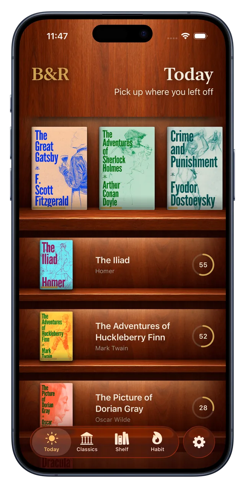
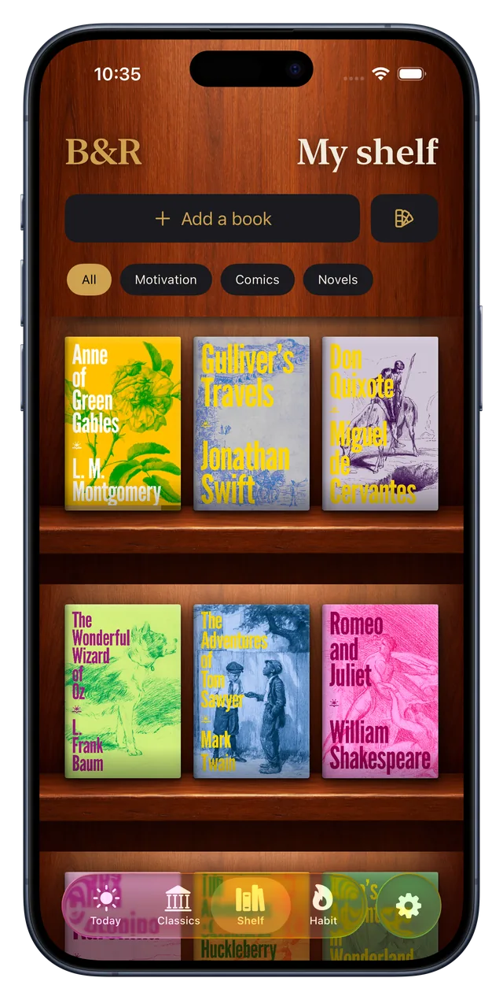
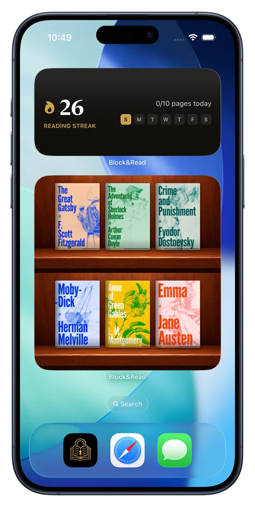
How it works
Three steps. Zero willpower.
The habit you already have, reaching for your phone, becomes the trigger for the one you want.
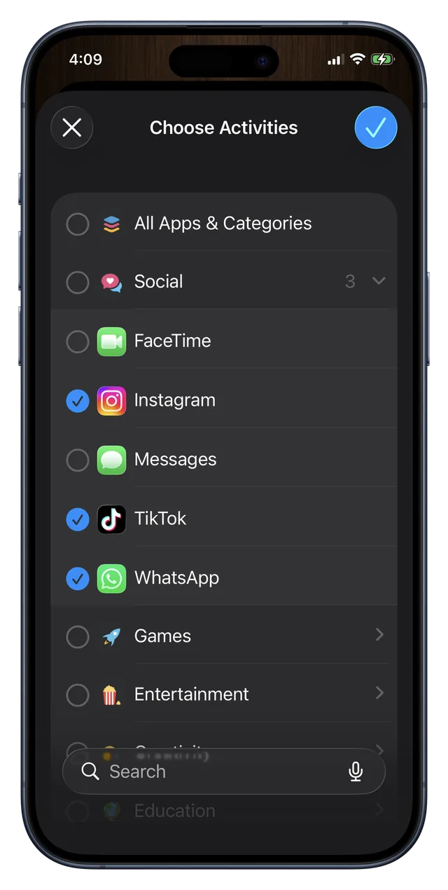
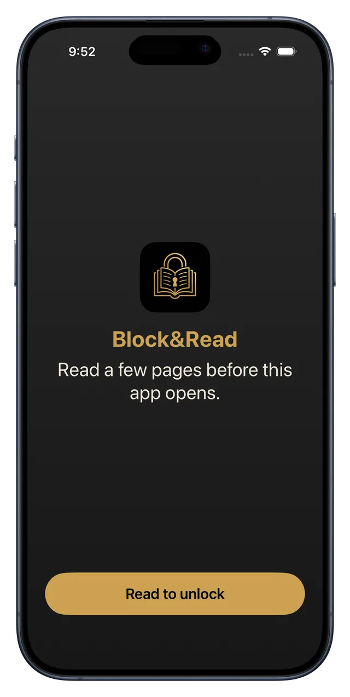
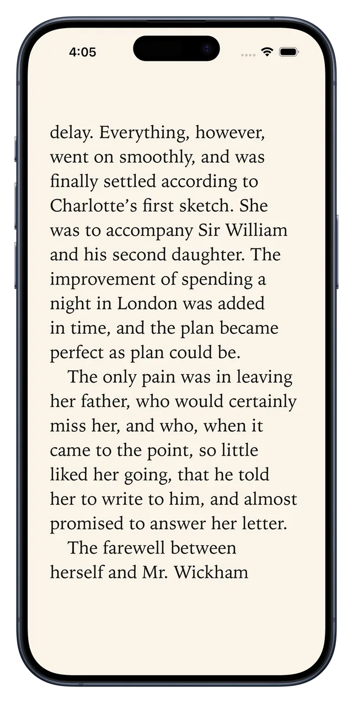
Inside the App
Block the apps. Read the books.
A blocker that only works if the reading is worth coming back to. So the reading got a bookcase.
Your library
Your books, on a real shelf.
Covers stand on wood, with warm light under every board. Pick walnut, oak, ebony or cherry, and sort your books into shelves of your own.
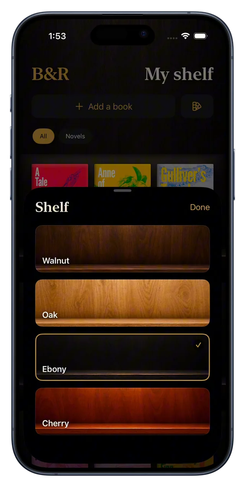
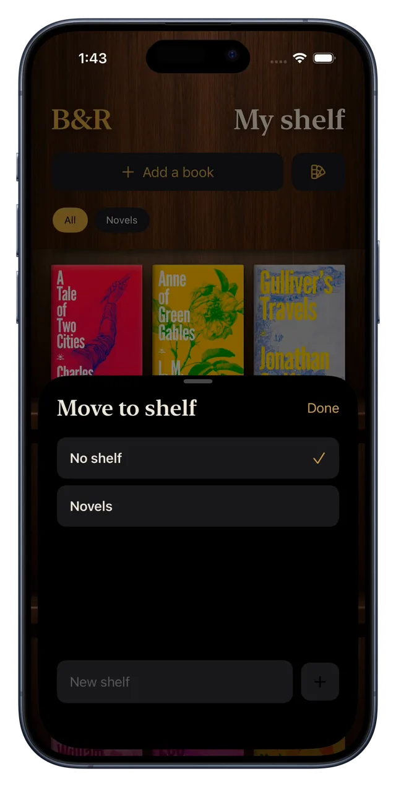
The reader
Read it. Mark it. Keep it.
Highlight a line in one of eight colors, or any color you like, and write a note on it. Bookmark a page and come back to it, even after you change the text size. Light, sepia or dark; paged or scroll.
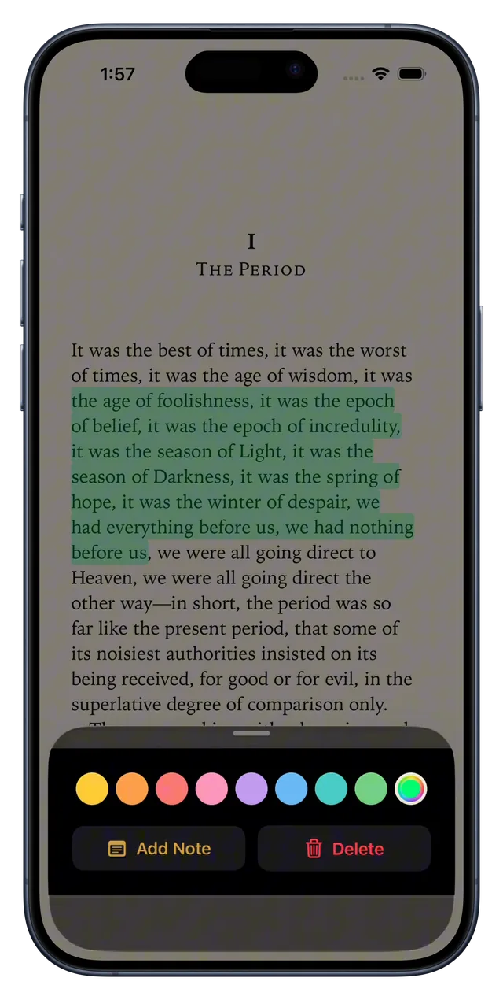
Your books, and ours
Classics built in. Your own books too.
81 public-domain classics in English and Spanish, ready to read. Bring your own, your first one is free, and search 75,000+ more with Premium. One reading menu for every format, showing only what each one can do.
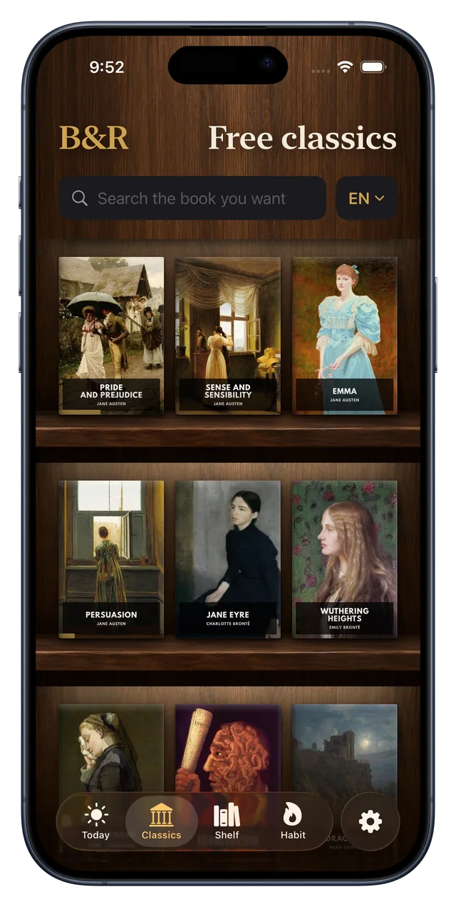
The habit
A streak you won't want to break.
Every day you read fills a square, and the streak grows. The daily reminder rings like an alarm, even on silent, and your latest covers wait on your Home Screen, one tap from the page.
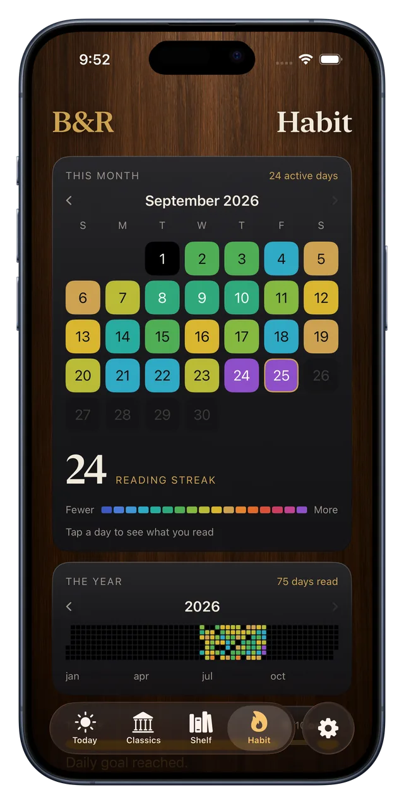
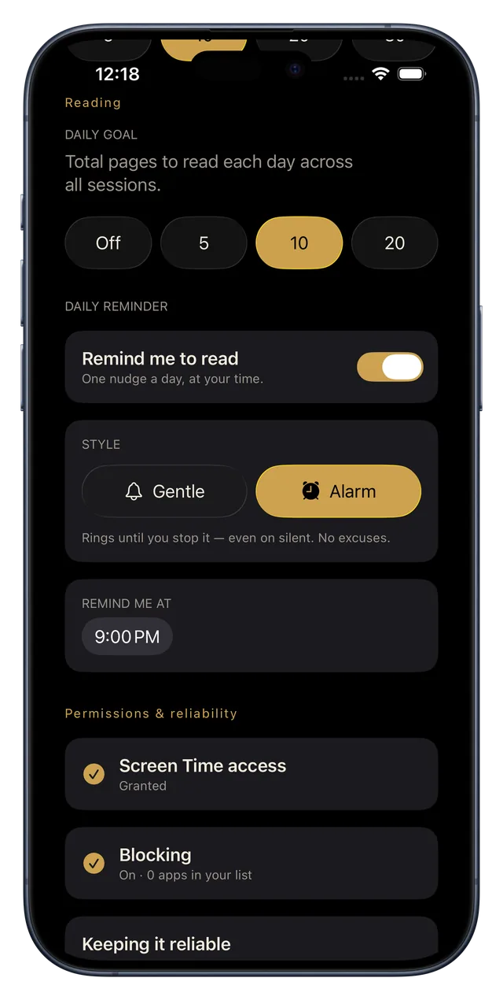
iPad
A bigger shelf.
On iPad the shelves widen, Today fits twice the books, and the extra-large widget holds twelve covers.
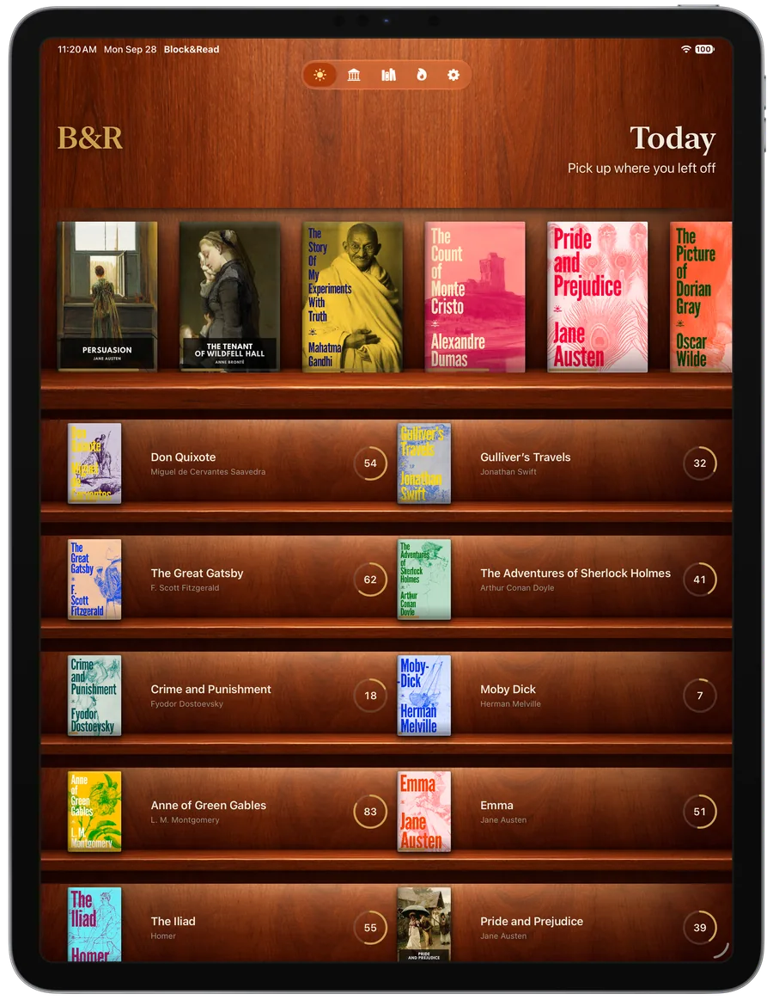
Pricing
Free to start. Yours to keep.
Most people only need to block one app. That part is free, and it stays free.
Free
Everything you need to start.
- Block one app, forever
- One book of your own
- 81 classics in English and Spanish
- Bookmarks, highlights and notes
- Streaks, stats and reminders
- Strict Mode
$0 no account needed
Premium
For when one app isn't the whole problem.
- Block every app
- Blocks itself on a schedule
- All your own books: EPUB, PDF, comics
- Search 75,000+ classics
- Private iCloud backup
- The Modern Mono theme
Prices in US dollars. The App Store shows the price for your country.
Guides
Win your attention back.
Practical guides on screen time, focus and reading more, and how to put Block&Read to work on each one.
Why App Blockers Fail (and What Works Instead)
Blocking creates a void, and the void loses to boredom every time. Replacement beats restriction.
Read the guide Screen TimeHow to Reduce Screen Time Without Deleting Your Apps
You don't need to quit your phone. You need to make the good thing easier than the bad thing.
Read the guide ReadingHow to Read More Books With the Time You Already Have
You read for hours every day, just not books. How to redirect the scroll into chapters.
Read the guide DistractionHow to Stop Doomscrolling (Without Throwing Your Phone Away)
The scroll is a slot machine. Here's how to swap the payout for pages.
Read the guide EPUB ReaderA Free EPUB Reader for iPhone That Blocks Your Apps
Import your own books, read distraction-free, and let your library guard your attention.
Read the guide StudyHow to Study Without Your Phone Pulling You Away
Blocking during study sessions, and turning course reading into the key that unlocks your breaks.
Read the guideFAQ
Questions, answered.
What is Block&Read?
How does read-to-unlock work?
Which apps can I block?
What is Strict Mode?
Can I read my own books?
Can I highlight and take notes?
What books are included for free?
Does it work on iPad?
Does Block&Read track my data?
How much does Block&Read cost?
Is there a one-time purchase?
Can Block&Read reduce my screen time?
Does it work for studying?
Is Block&Read available in Spanish?
Earn the scroll.
Your apps aren't going anywhere. Neither are the books. The only question is which one opens first.
Download on theApp StoreiPhone and iPad · Free to start · No ads, no accounts, no tracking